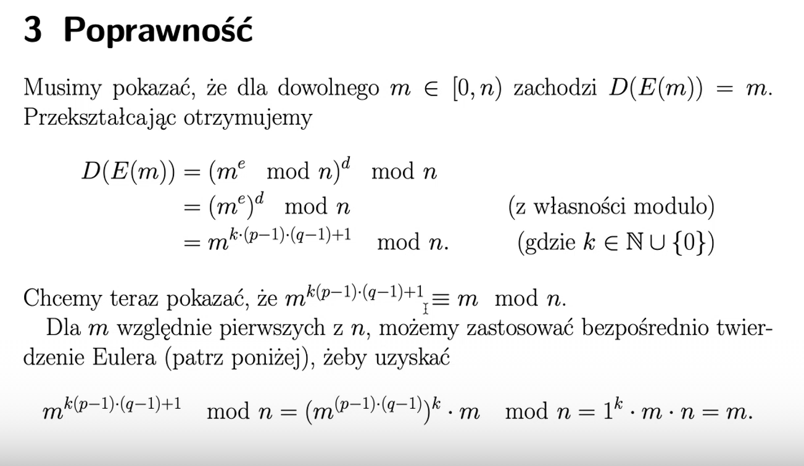
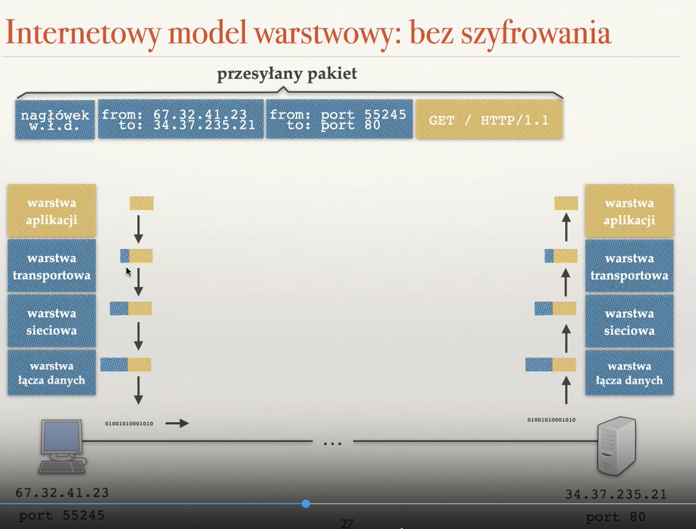
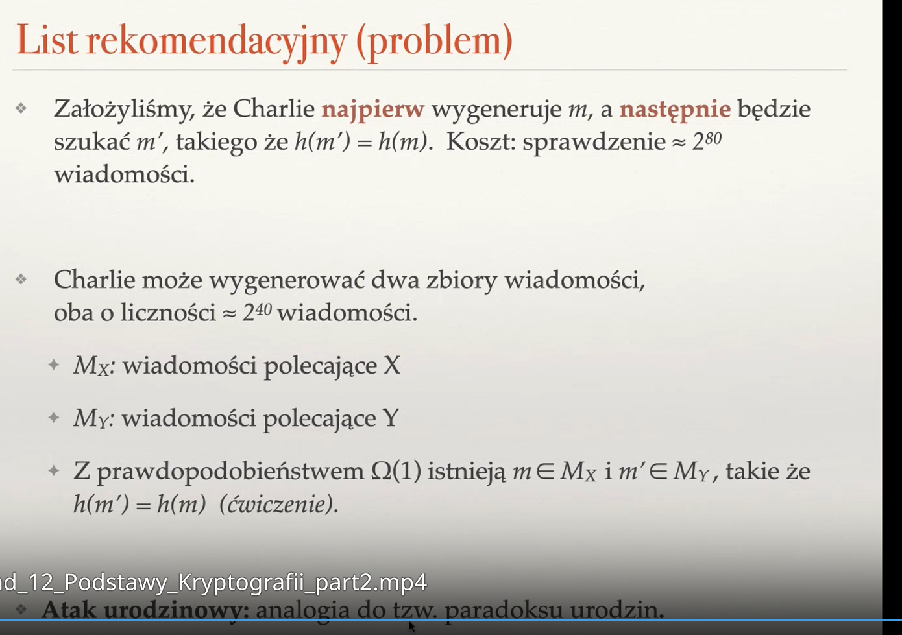

Created Sunday 26 June 2022
Zagadnienia
❖ Czym szyfrowanie symetryczne różni się od asymetrycznego?
W szyfrowaniu symetrycznym obie strony znają ten sam klucz, który używają do szyfrowania i deszyfrowania. Nikt inny poza nimi nie zna tego klucza.
W szyfrowaniu asymetrycznym dwie strony posiadają swoje własne klucze publiczny i prywatny. Jeśli Alicja chce przesłać coś do Boba, wtedy wymieniają się swoimi kluczami publicznymi. Alicja szyfruje wiadomość kluczem publicznym, a następnie Bob rozszyfrowuje ją swoim kluczem prywatnym.
❖ Na czym polega bezpieczeństwo przy szyfrowaniu asymetrycznym?
Nie dzielimy się z drugą stroną kluczem, który wykorzystujemy do deszyfrowania, a jedynie kluczem publicznym, którego używamy do szyfrowania. Dzięki temu rozszyfrowanie wiadomości jest bardzo trudne dla adwersarza, ponieważ o ile nie pozna naszego klucza prywatnego, to musi się sporo napocić.
❖ Opisz algorytm RSA.
- Wybieramy duże liczby pierwsze p=/=q.
- Obliczamy n = p*q
- Znajdujemy duże d względnie pierwsze z (p-1)(q-1)
- Znajdujemy takie e, ze d*e mod (p-1)(q-1) = 1 (rozszerzonym algorytmem Euklidesa)
- Para (e,n) to klucz publiczny, a (d, n) to klucz prywatne.
Szyfrowanie liczby m z przedziału [0, n) polega na ogliczeniu E(m) = m^e mod n. Wysyłamy ją do odbiorcy jako szyfrogram s. Odbiorca bierze s i odszyfrowuje D(s) = s^d mod n.
Dlaczego to działa?

❖ Czy różni się szyfrowanie od uwierzytelniania?
Uwierzytelnianie to weryfikowanie autentyczności drugiej strony — sprawdzamy, czy nikt się nie podszywa pod rózmówcę.
Szyfrowanie to przekształcanie wiadomości z postaci jawnej na szyfrogram, który jest nieczytelny i niezrozumiały, dopóki nie zostanie rozszyfrowany z powrotem do postaci jawnej.
❖ Co to jest atak powtórzeniowy?
Jeśli adwersarz posiada dostęp do kanału komunikacji, to może nagrać całą parę (X, Ea(X)) i wykorzystać ją do udawania jednej ze stron.

❖ Czy w szyfrowaniu asymetrycznym szyfrujemy kluczem publicznym czy prywatnym?
Publicznym. Prywatne służy do deszyfracji.
❖ Na czym polega podpisywanie wiadomości? Jakim kluczem to robimy?
W przypadku, gdy Alicja wysyła wiadomość do Boba, to ma pewność, że rozmawia z Bobem, o ile uda mu się rozszyfrować wiadomość (tylko on zna swój klucz prywatny(. Ale Bob nie ma pewności, czy wiadomość wysłała do niego Allicja. W tym celu Alicja stosuje podobną metodę co przy szyfrowaniu. Korzystamy z wzajemnej odwrotności funkcji szyfrującej i deszyfrującej, tzn. 
i tworzymy wiadomość Eb(m), która jest podpisem cyfrowym wiadomości m — wiadomością zaszyfrowaną kluczem prywatnym, będziemy ją rozszyfrowywać kluczem publicznym. Tylko Alicja zna swój klucz prywatny, więc tylko ona mogła złożyć ten podpis, ale każdy może go odczytać, bo każdy zna jej klucz publiczny.
❖ Jak można wykorzystać podpisy cyfrowe do uwierzytelniania?
Stosujemy metodę challenge response. Jeśli Alicja chce rozmawiać z Bobem, to ten poprosi ją, by udowodniła, że faktycznie jest Alicją. Wysyła jej pewną unikatową, wcześniej nieużywaną wiadomość, którą Alicja musi podpisać. Jesli Bob jest w stanie rozszyfrować odpowiedź kluczem publicznym Alicji, to wie, że rozmawia z Alicją.

❖ Czy HMAC można wykorzystać do uwierzytelniania? Czy HMAC jest podpisem cyfrowym?
HMAC (Message Authentication Code) można wykorzystywać do uwierzytelniania, ponieważ skoro polega na szyfrowaniu wiadomości za pomocą jakiegoś sekretu, który jest znany tylko osobom uprawnionym do komunikacji, to jeśli ktoś umie nim coś zaszyfrować, to musi znać sekret (prawdopodobnie). Nie jest to jednak podpis, ponieważ sekret jest wspólny — każda osoba, która go zna może go użyć do podpisania się lub rozczytania podpisu, ale podpis powinna umieć wykonać tylko jedna osoba.
❖ Dlaczego lepiej podpisywać funkcję skrótu wiadomości niż samą wiadomość? Z jakim ryzykiem się to wiąże?
Podpisywanie wiadomości wiąże się z tym, że musimy zaszyfrować całą wiadomość, co jest kosztowne obliczeniowo i zabiera dużo czasu. Lepiej skrócić wiadomość jakąś funkcją skrótu i dopiero ją podpisać, ale istnieje niebezpieczeństwo, że nasz skrót nie będzie unikatowy i może zostać podrobiony.
❖ Co to są certyfikaty? Co to jest ścieżka certyfikacji?
Certyfikat to informacja poświadczające autentyczność klucza publicznego danej osoby, instytucji, itd. Dany klucz publiczny mogą potwierdzić inni użytkownicy lub urzędy certyfikacji (CA — Certification Authority).
Ścieżka certyfikacji to graf certyfikatów, w której kolejni użytkownicy kolejno potwierdzają swoją tożsamość.
❖ Co to jest urząd certyfikacji (CA)?
To zaufane urzędy, które potwierdzają tożsamość danego klucza publicznego. Weryfikują, czy faktycznie jesteśmy tym, za kogo się podajemy. Klucze publiczne CA są wpisane w przeglądarki (ich zbiory mogą się różnić między przeglądarkami). Pozwalają na niebezpośrednie (użytkownik nie musi tego robić) potwierdzania tożsamości klucza publicznego. Wykorzystuje TLS.
❖ Jak SSL/TLS zapewnia bezpieczeństwo połączenia?
Użytkownicy nie chcą sami szyfrować i uwierzytelniać, dlatego stosuje się protokół TLS, który robi to za nich.


❖ W jaki sposób w SSL następuje uwierzytelnienie serwera, z którym się łączymy?
Uwierzytelnianie serwera:
- Serwer WWW wysyła certyfikat (klucz publiczny + dane o stronie) podpisane przez pewne CA
- Przeglądarka sprawcza, czy ma klucz publiczny tego CA i sprawdza prawdziwość podpisu CA
- Dane o stronie opisują stronę, z którą zamierzamy się łączyć
- Szyfrujemy wiadomości dla serwera WWW jego kluczem publicznym
- A co z odpowiedziami? Jak uwierzytelnić użytkownika?
Uwierzytelnianie użytkownika w teorii jest możlwe w TLS, ale wymagałoby, żeby miał on certyfikowany klucz. W praktyce zwykle uwierzytelnia się po prostu na poziomie warstwy aplikacji przez parę użytkownik + hasło/token/plik cookie.
❖ Co to są klucze sesji? Po co się je stosuje?
Serwer powinien szyfrować dane do klienta, ale klient zwykle nie ma swojego klucza publicznego. Dlatego w TLS przeglądarka generuje symetryczny klucz sesji (np. AES) i jest on wykorzystywany do komunikacji. Przeglądarka szyfruje go kluczem publicznym serwera WWW i wysyła na serwer WWW. Dalej komunikacja jest szyfrowana kluczem sesji. Dodatkowo takie szyfrowanie jest szybsze!
Szyfrowanie symetryczne jest wielokrotnie szybsze niz asymetryczne!!!
❖ Co to są kolizje kryptograficznej funkcji skrótu?
Kryptograficzna funkcja skrótu generuje krótszy ciąg bitów jako wartość dla argumentu, który jest dłuższą wiadomością. Nie ma jednak pewności, że inna wiadomość nie wygeneruje takiej samej funkcji skrótu — mamy wtedy kolizję.
❖ Na czym polega atak urodzinowy?
Chodzi o to, że mamy wiadomość m i chcemy znaleźć inną wiadomość m' taką, że h(m)=h(m'). Teoretycznie znalezienie m' to sprawdzenie ok 2^80 wiadomości (za dużo). Ale adwersarz może najpierw wygenerować m, a potem szukać takiego m' (dodając jakieś nieistotne zmiany, np. spacje, tabulatury, itp.), że h(m)=h(m'). Kosz to dalej 2^80. Ale jeśli adwersarz wygeneruje dwa zbiory wiadomości, oba o liczności ok. 2^40 wiadomości — pierwszy z nich zawiera informacje dotyczącą X, a drugi te same informacje, ale o Y, to mamy pewność, że istnieje taka wiadomość m w pierwszym i m' w drugim zbiorze, że h(m') = h(m). Analogia do paradoksu urodzin.


❖ Na jaki atak narażone jest podejście, w którym wiadomość najpierw szyfrujemy a potem podpisujemy?
Adwersarz moze przechwycić zaszyfrowaną wiadomość bez podpisu i podpisać ją własnym kluczem, przez co odbiorca będzie myślał, że to adwersarz wysłał tę wiadomość.
{kind=link}
{kind=link}
{kind=link}